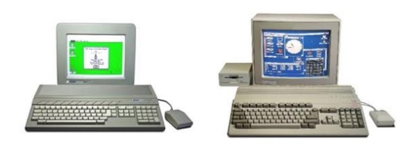
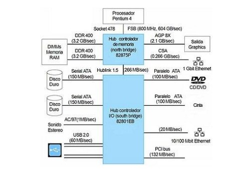
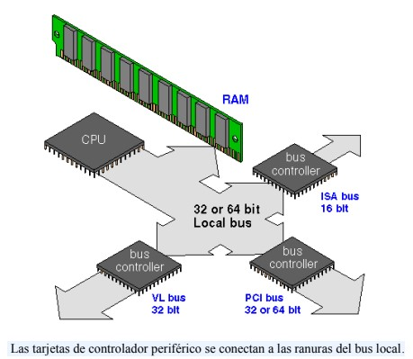
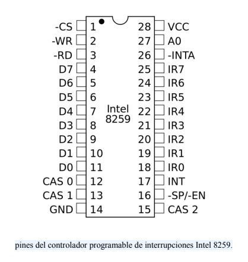
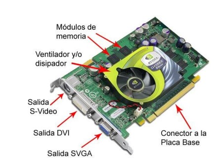
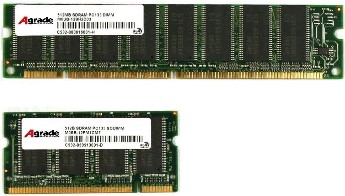
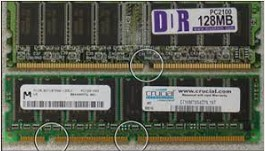

Un chipset es el conjunto de circuitos integrados diseñados con base en la arquitectura de un procesador (en algunos casos, diseñados como parte integral de esa arquitectura), permitiendo que ese tipo de procesadores funcionen en una placa base. Sirven de puente de comunicación con el resto de componentes de la placa, como son la memoria, las tarjetas de expansión, los puertos USB, ratón, teclado, etc.
Las placas base modernas suelen incluir dos integrados, denominados puente norte y puente sur, y suelen ser los circuitos integrados más grandes después de la GPU y el microprocesador. Las últimas placa base carecen de puente norte, ya que los procesadores de última generación lo llevan integrado.
Chipset Intel i45GC en conjunto con un procesador Pentium Dual-Core E2220 2.40 GHz.
Desde los comienzos de la historia la fabricación de los primeros microprocesadores, se pensó en un conjunto de integrados de soporte, de hecho, el primer microprocesador de la historia, el Intel 4004 formaba parte de un conjunto de integrados numerados 4001, 4002 y 4003 que tenían todos una apariencia física similar y que formaban la base de un sistema de cómputo cualquiera.
Mientras que otras plataformas usaban muy variadas combinaciones de chips de propósito general, los empleados en el Commodore 64 y la Familia Atari de 8 bits, incluso sus CPUs, solían ser diseños especializados para la plataforma, que no se encontraban en otros equipos electrónicos, por lo que se les comenzó a llamar chipsets.
El chipset es el que hace posible que la placa base funcione como eje del sistema, dando soporte a varios componentes e interconectándolos de forma que se comuniquen entre ellos haciendo uso de diversos buses. Es uno de los pocos elementos que tiene conexión directa con el procesador, gestiona la mayor parte de la información que entra y sale por el bus principal del procesador, del sistema de vídeo y muchas veces de la memoria RAM.
En el caso de los computadores PC, es un esquema de arquitectura abierta que establece modularidad: el chipset debe tener interfaces estándar para los demás dispositivos. Esto permite escoger entre varios dispositivos estándar, por ejemplo, en el caso de los buses de expansión, algunas tarjetas madre pueden tener bus PCI-Express y soportar diversos tipos de tarjetas de distintos anchos de bus (1x, 8x, 16x).
La terminología de los integrados ha cambiado desde que se creó el concepto del chip-set a principio de los años 1990, pero todavía existe equivalencia haciendo algunas aclaraciones:
Puente norte: northbridge, MCH (memory controller hub) o GMCH (graphic MCH), se usa como puente de enlace entre el microprocesador y la memoria. Controla las funciones de acceso hacia y entre el microprocesador, la memoria RAM, el puerto gráfico AGP o el PCI-Express de gráficos, y las comunicaciones con el puente sur. Al principio tenía también el control de PCI, pero esa funcionalidad ha pasado al puente sur.
Puente sur: southbridge o ICH (input controller hub), controla los dispositivos asociados como son la controladora de discos IDE, puertos USB, FireWire, SATA, RAID, ranuras PCI, ranura AMR, ranura CNR, puertos infrarrojos, disquetera, LAN, PCI-Express 1x y una larga lista de todos los elementos que podamos imaginar integrados en la placa madre. Es el encargado de comunicar el procesador con el resto de los periféricos.
La unidad central de procesamiento (siglas en inglés Central Processing Unit) es el hardware dentro de una computadora u otros dispositivos programables. Su trabajo es interpretar las instrucciones de un programa informático mediante la realización de las operaciones básicas aritméticas, lógicas y externas (provenientes de la unidad de entrada/salida). Su diseño y avance ha variado notablemente desde su creación, aumentando su eficiencia y potencia, y reduciendo aspectos como el consumo de energía y el costo.
Los componentes de la CPU son:
° Unidad aritmético lógica (ALU): realiza operaciones aritméticas y lógicas
° Unidad de control (CU): dirige el tráfico de información entre los registros de la CPU y conecta con la ALU las instrucciones extraídas de la memoria.
° Registros internos: no accesibles (de instrucción, de bus de datos y bus de dirección) y accesibles de uso específico (contador programa, puntero pila, acumulador, flags, etc.) o de uso general.
El controlador del bus se encarga de la frecuencia de funcionamiento y las señales de sincronismo, temporización y control. Está ubicado en un chip en la placa base.
Un puerto de E/S es un punto de conexión que actúa como interfaz entre la computadora y dispositivos externos como mouse, impresora, módem, etc. Estos son de dos tipos:
1. Puerto interno: conecta la placa base a dispositivos internos como unidad de disco duro, unidad de CD, módem interno, etc.
2. Puerto externo: conecta la placa base a dispositivos externos como módem, mouse, impresora, unidades flash, etc.
El controlador de interrupciones es un módulo que tiene por función gestionar las interrupciones de entrada/salida para el procesador. Esto ahorra diseñar lógica y añadir patitas al procesador. También proporciona flexibilidad porque permite idealmente, gestionar un número ilimitado señales de interrupción (favoreciendo la expansión del sistema de entrada/salida).
El controlador recibe el conjunto de señales de interrupción procedentes de los dispositivos, toma la decisión de cuál es la más prioritaria, y envía una única señal al procesador. La respuesta del procesador es transmitida al dispositivo y el propio controlador se encarga de depositar en el bus el vector de la interrupción.
1. Tras la activación de una línea IR, el controlador activa la salida INTR señalándole a la CPU la existencia de una interrupción activada.
2. Al recibir la señal, el procesador da un pulso en su salida INTA indicando que comienza un ciclo de reconocimiento de interrupción.
3. Al recibir el controlador el pulso por su entrada INTA comienza a arbitrar las interrupciones recibidas y selecciona la más prioritaria.
4. Se emite un segundo pulso por la línea INTA del procesador (o controlador de bus) que utiliza el controlador para depositar en el bus el vector correspondiente a la interrupción de mayor prioridad.
5. El procesador obtiene la dirección de la rutina de interrupción a partir de este dato y salta a ella. Almacena el registro de flags y la dirección de retorno, deshabilita las interrupciones y comienza a ejecutar la rutina.
La tarjeta de video, (también llamada controlador de video), es un componente electrónico requerido para generar una señal de video que se manda a una pantalla de video por medio de un cable. La tarjeta de video se encuentra normalmente en la placa de sistema de la computadora o en una placa de expansión. La tarjeta gráfica reúne toda la información que debe visualizarse en pantalla y actúa como interfaz entre el procesador y el monitor; la información es enviada a éste por la placa luego de haberla recibido a través del sistema de buses.
Una tarjeta gráfica se compone, básicamente, de un controlador de video, de la memoria de pantalla o RAM video, y el generador de caracteres, y en la actualidad también poseen un acelerador de gráficos. El controlador de video va leyendo a intervalos la información almacenada en la RAM video y la transfiere al monitor en forma de señal de video; el número de veces por segundo que el contenido de la RAM video es leído y transmitido al monitor en forma de señal de video se conoce como frecuencia de refresco de la pantalla.
Las memorias RAM pueden ser de dos tipos dependiendo de su tamaño, y estos tipos son la memoria RAM DIMM y la SODIMM. Los primeros son los Módulos de memoria en línea dual, y son los que puedes encontrar sobre todo en ordenadores de sobremesa, y los segundos son unos Módulos de memoria en línea doble que encontrarás sobre todo en los ordenadores portátiles.
Existen dos tipos de memoria RAM. Las memorias de tipo DDR (Double Data Rate) se caracterizan por ser capaces de llevar a cabo dos operaciones en cada ciclo de reloj, a diferencia de las de tipo SDR (Single Data Rate), que solo ejecutan una operación de lectura o escritura. Para hacerlo posible los chips DDR se activan dos veces en cada ciclo de la señal de reloj, bien por nivel (alto o bajo), bien por flanco (de subida o bajada).
Cuanto más moderno es el estándar que estás utilizando mayor será la velocidad a la que puede operar. Esto quiere decir que no es lo mismo tener una DDR4 con una tasa de datos de 3,2 GB/s y una tasa de transferencia máxima de 25,6 GB/s que una DDR5 con 6,4 GB/s y 51,2 GB/s respectivamente.
Velocidades de los tres principales estándares, los dos más utilizados actualmente y el futuro DDR5:
DDR3: Tasa de datos de hasta 2133 MB/s, y tasa de transferencia máxima de 17 GB/s.
DDR4: Tasa de datos de hasta 3,2 GB/s, y tasa de transferencia máxima de 25,6 GB/s.
DDR5: Tasa de datos de hasta 6,4 GB/s, y tasa de transferencia máxima de 51,2 GB/s.
DDR SDRAM (Double Data Rate Synchronous Dynamic RAM)
Estas memorias se estandarizaron a comienzos de los 2000 y gracias a ellas surgieron las nuevas generaciones. Suele operar el doble de rápido que las SDR SDRAM de años anteriores, contando con pines desde 168 hasta 184. Su voltaje es de 2.5 Voltios, a diferencia de la SDR DRAM que era de 3.3 Voltios.
DDR2 SDRAM
Está cuenta con dos lecturas y dos escrituras al hablar de sus operaciones por ciclo. Suele tener una velocidad de hasta 533 Mhz y un voltaje de 1.8 voltios con aproximadamente 240 pines de conexión. Este modelo fue usado principalmente hasta el año 2010 cuando salió una nueva generación de estas memorias.
DDR3 SDRAM
Las mejoras en comparación a la generación anterior son muchas, ya que ofrece un menor consumo que es de 1.5 voltios. Su velocidad cambia a un funcionamiento de 800 Mhz aunque el número de pines se sigue manteniendo en este caso. El modelo DDR3 2000 pude ofrecer hasta transferencias de 2 millones de datos/segundo.
DDR4 SDRAM
Es amplio el crecimiento que se tiene en velocidad con esta generación que actualmente es la más reconocida. Cuenta con 1600 Mhz de velocidad y un consumo de voltaje de solo 1.2 Voltios. En este caso, los pines con los que cuenta son 288, por lo que no es compatible con los casos anteriores.
DDR5 SDRAM
Esta es la última generación que salió al mercado, por lo que no es totalmente reconocida. Este modelo se caracteriza por soportar de manera simultánea hasta dos canales distintos por cada módulo DIMM. Se presenta como una de las mayores novedades en memoria RAM del mercado para los usuarios de máximo rendimiento.